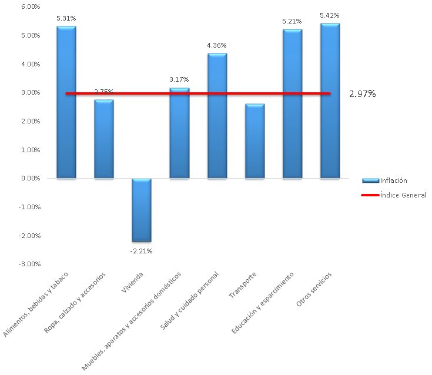
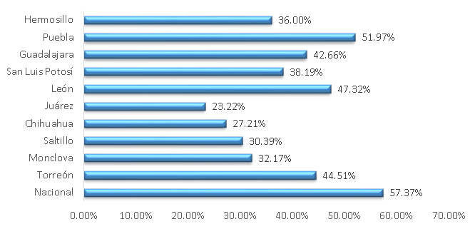
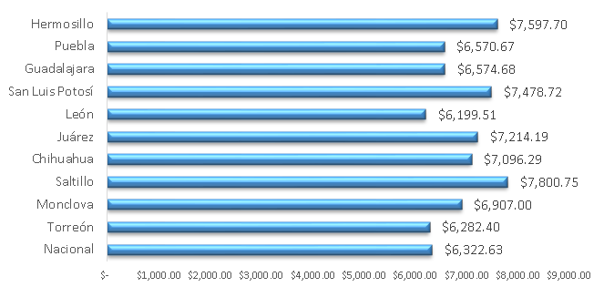

En los primeros tres trimestres del 2016, el porcentaje de la Población Económicamente Activa (PEA) sin empleo es en promedio de 5.43% en la región Lagunera, tasa menor al promedio de 5.66% obtenido en el mismo periodo del 2015, pero mayor al promedio nacional que es de 4.03%.
Los estados de Coahuila y Durango promediaron tasas de desempleo de 4.43 y 4.90% respectivamente. La tasa de informalidad, que contempla tanto al personal ocupado en establecimientos informales como al personal desempeñando empleos informales en el mercado formal, disminuyó de 44.80 a 42.87% en el periodo mencionado.
Las disminuciones en la informalidad y el desempleo, coinciden con los datos del Instituto Mexicano del Seguro Social (IMSS), que cuantifica 286,807 trabajadores asegurados en la Zona Metropolitana de La Laguna al cierre de septiembre, después de un incremento de 14,390 con respecto al mes de diciembre de 2015.
Por su parte, el salario promedio para jornadas completas de la ZML aumentó en 400 pesos con respecto al tercer trimestre de 2015. La principal alza fue en el municipio de Lerdo, con un aumento de 1,531.23 pesos y cerrando el periodo en 5,896.23 pesos.
Mientras el salario promedio creció 6.7% nominal anual al mes de septiembre, la inflación trimestral calculada por el INEGI para el municipio de Torreón, fue de 2.97%, igual que la nacional, por lo que el crecimiento real de los salarios fue de alrededor de 4%.
El alza de precios en la región se debió principalmente a los componentes de alimentos, bebidas y tabaco, así como en educación y esparcimiento, que sufrieron alzas de 5.31 y 5.21% respectivamente. Algunos productos cuyos precios aumentaron son: frutas y verduras, tortillas, vinos y licores y tabaco, en el caso del primero, y colegiaturas de primarias y secundarias, boletos de cine y artículos deportivos en el caso del segundo. Los componentes con menores variaciones fueron Ropa, calzado y accesorios y Transporte.
Como municipio, Torreón promedió un salario de 6,392.87 pesos y una tasa de desempleo de 5.67%, menor al promedio de los primeros tres trimestres de 2015, de 6.27%.
El aumento de trabajadores asegurados en el municipio durante los primeros nueve meses de 2016 fue de 11,244, lo que representa casi 80% del aumento en toda la Zona Metropolitana. El aumento no se atribuye exclusivamente a las grandes inversiones del año, si no a la gran cantidad de nuevos establecimientos registrados que varían entre rangos de 5 a 10 empleados hasta rangos de más de 200. La mayoría de los establecimientos son de giro comercial y de servicios y aportaron más de 10,000 empleos a la economía formal de Torreón.
En comparación con otros municipios, Torreón tiene una tasa de informalidad menor a la de ciudades como Puebla y León, Guanajuato, además de encontrarse más de diez puntos por debajo del promedio nacional de 57.37%.
En salarios promedio para trabajadores de jornadas completas Torreón se encuentra cerca de la media nacional y de municipios como Puebla, Guadalajara y Monclova. Otros municipios como Saltillo y San Luis Potosí tuvieron mejores resultados que Torreón en el tercer trimestre, con salarios superiores a 7,000 pesos.
Panorámica anual
En resumen, 2016 ha sido un año difícil no sólo para La Laguna, también para México. Este año la tasa de referencia del Banco de México (Banxico) aumentó 250 puntos base, el tipo de cambio pasó de 17.35 a 20 pesos por dólar y el precio de la mezcla mexicana de petróleo se mantuvo alrededor de los 40 dólares. Incluso los pronósticos de crecimiento de la economía nacional fueron recortados en varias ocasiones por organismos nacionales e internacionales, hasta quedar en alrededor de 1.9% para 2017.
Aun en este contexto, Torreón y La Laguna lograron fortalecer su mercado formal con el registro de 1,735 establecimientos y la formalización o creación de más de 10,000 empleos. Además, los salarios se mantuvieron en un rango similar al año pasado y la tasa de desempleo logró disminuir.
Los cambios, aunque poco perceptibles en el corto plazo, sientan las bases para el largo plazo, demuestran la fortaleza e importancia de la contribución de los emprendedores locales, a la vez que transmiten confianza y estabilidad a los posibles inversionistas extranjeros.
Salario promedio

Informalidad

Inflación en Torreón por objeto del gasto
